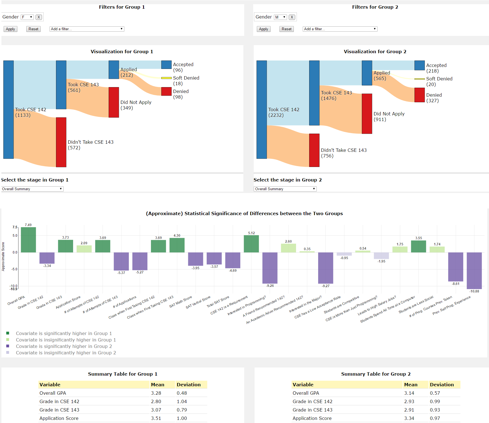

by Sachin Mehta, Wesley Lee, and Sam Crow
View the Project on GitHub CSE512-16S/fp-sacmehta-samcrow-wesleytlee
This project visualizes admission data from the department of Computer Science and Engineering. It uses Sankey diagrams to display the flow of students through the admission process. Users can apply filters to select and compare groups of students.

Team members: Sachin Mehta, Wesley Lee, and Sam Crow
Any HTTP server can provide the files that the visualization uses. It does not require any special software.
TODO